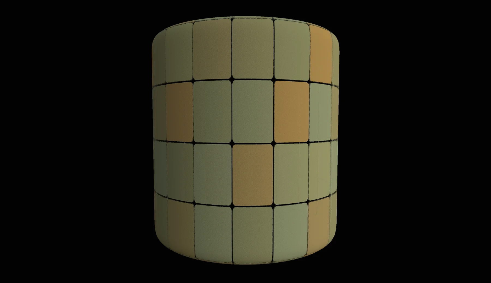
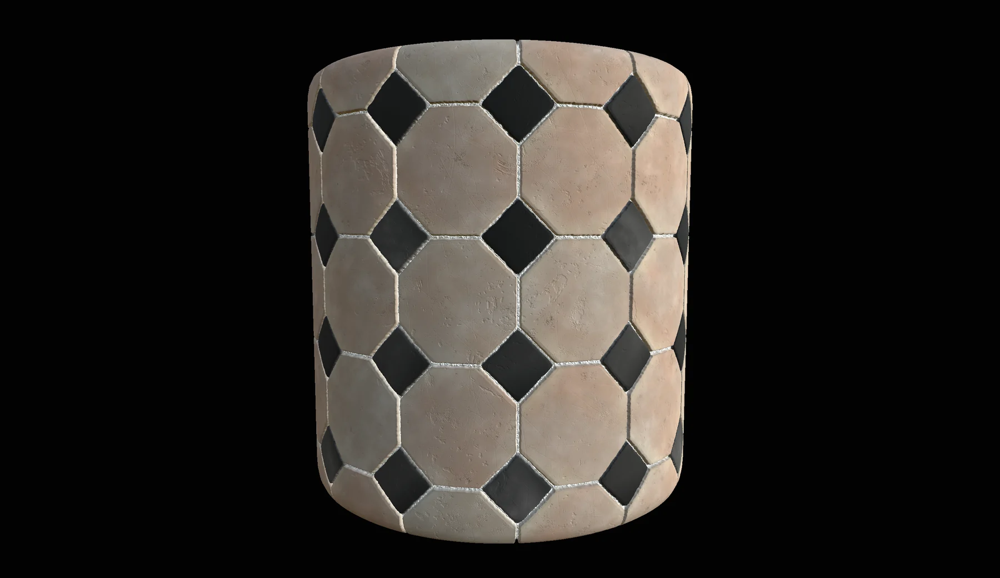
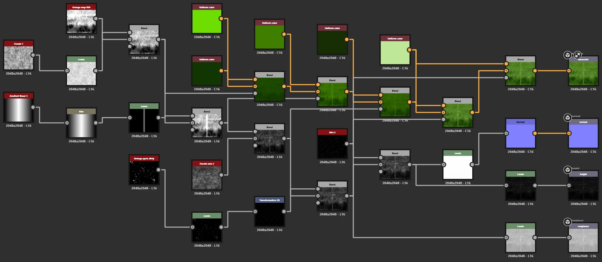
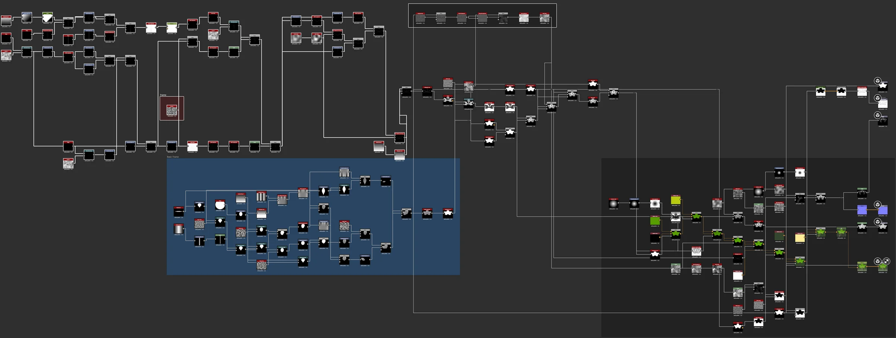
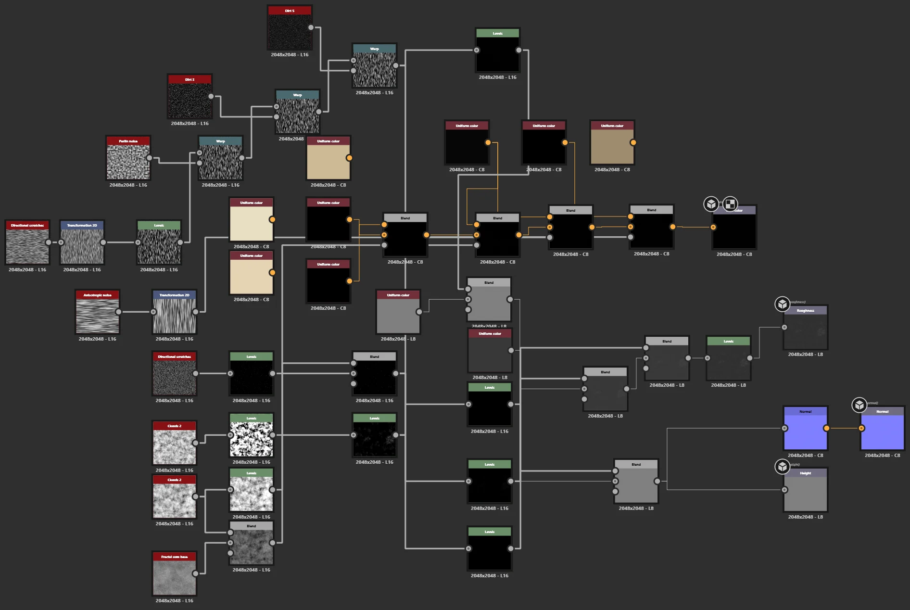
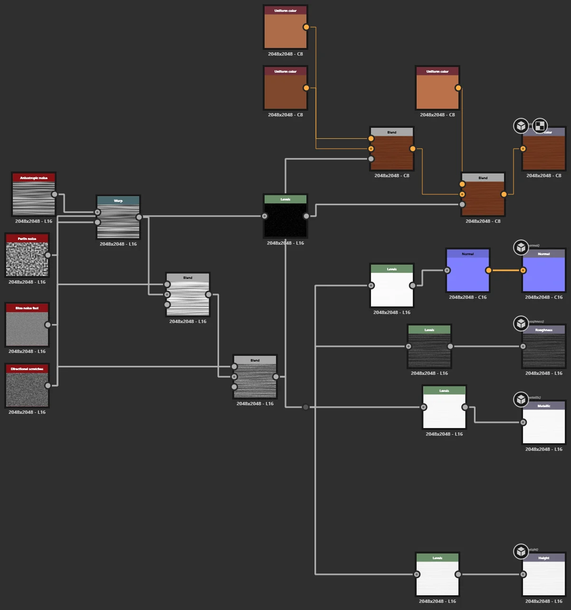

← Unreal


Substance Designer → Substance Painter → Unreal Engine
Substance Designer → Substance Painter → Unreal Engine
钢琴场景的材质：先在 Substance Designer 程序化制作，主要道具再到 Substance Painter 手绘细节，最后在 Unreal Engine 组合成完整场景。
12种材质
12张节点图
3个软体
1个完整场景
最终效果：植物
Substance Designer 的 Iray 渲染，有机材质。
最终效果：钢琴与表面


节点图



